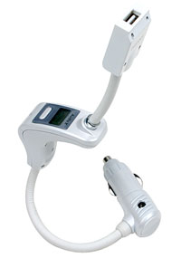

| AudiaX iTube-101
As an owne of an iPod shuffle, I felt that I wasn't making as much use of it as I could - this was mainly to do with me driving to work, rather than taking the bus or train. To remedy this I bought an iTube FM transmitter We've had 2 different FM transmitters for our main iPod, and our current one, the Monster iCarPlay is excellent and gets used quite often. I drive to work every day, and own an iPod Shuffle which wasn't getting used that often. Answer - an FM transmitter. I did a lot of searching around the internet, but only really found 2 options. After investigation the iTube was bought, mainly because it didn't need batteries. The interface is very simple and easy to use, it has memory store and manual tuning options. All you have to do is identify a frequency which isn't used by other radio stations, and tune the iTube to that. For my daily journey to work 107.9 seems to be the most reliable. The unit plugs in to the cigarette lighter, and so charges whilst it is in use. The shuffle connects via USB and they seem to connect very well. The shuffle sits on the end of a flexible cable, which is actually really handy. It's strong enough to support the weight of the shuffle, meaning that, at least in a honda civic, the shuffle is level with the air vents in the centre console making the controls really easy to get at. Overall a well designed, useful unit, which works well. |
 Purchase from: IntoMusic Related Links:
|
|
Back to index page |